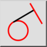
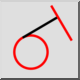
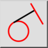
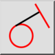

Ortogonal / tangencial
Barra de herramienta / icono:
 

Menú: Dibujar > Línea > Ortogonal / tangencial
Acceso directo: L, N
Comandos: lineorthogonaltangent | orthotangent
Esta es una traducción automática.
Barra de herramienta / icono:
 

Menú: Dibujar > Línea > Ortogonal / tangencial
Acceso directo: L, N
Comandos: lineorthogonaltangent | orthotangent
Utilice esta herramienta para crear una línea que sea ortogonal a otra línea y tangente a una entidad de arco, círculo o elipse existente.